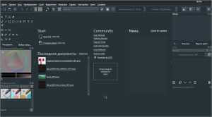
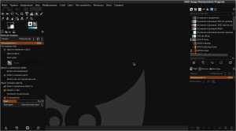
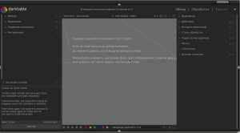
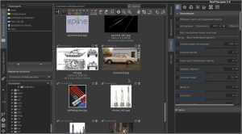
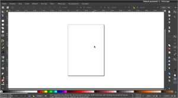

| Проприетарное ПО |
Свободное ПО |
| Photoshop - графический редактор |
Krita - бесплатный растровый графический редактор с открытым кодом, программное обеспечение, входящее в состав KDE.
[*]Официальный сайт: krita.org
[*]Steam: Krita
[*]Русскоязычные сайты: mykrita.ru, krita-rus.ru
[*]Страница загрузки: [Ссылка]
[*]Github: [Ссылка]
 |
GIMP - свободно распространяемый растровый графический редактор, программа для создания и обработки растровой графики и частичной поддержкой работы с векторной графикой.
[*]Официальный сайт: gimp.org
[*]Русскоязычные сайты: progimp.ru
[*]Страница загрузки: [Ссылка]
[*]Github: [Ссылка]
 |
|
| Photoshop Lightroom - обработка, редактирование и каталогизация фотографий |
Darktable - свободно распространяемая программа с открытым исходным кодом, ориентированная на обработку и каталогизацию изображений в формате raw.
[*]Официальный сайт: darktable.org
[*]Страница загрузки: [Ссылка]
[*]Github: [Ссылка]
 |
RawTherapee - свободная компьютерная программа, предназначенная для каталогизации и обработки цифровых изображений.
[*]Официальный сайт: rawtherapee.com
[*]Github: [Ссылка]
 |
|
| Illustrator - векторный графический редактор |
Inkscape - свободно распространяемый векторный графический редактор, удобен для создания как художественных, так и технических иллюстраций (вплоть до использования в качестве САПР общего назначения, чему также способствует лёгкость обмена чертежами).
[*]Официальный сайт: inkscape.org
[*]Русскоязычный сайт: inkscape.paint-net.ru
[*]Страница загрузки: [Ссылка]
[*]Gitlab: [Ссылка]
 |
|
|
| InDesign - компьютерная верстка |
Scribus |
|
|
| Premiere Pro — нелинейный видеомонтаж |
Kdenlive |
Natron |
|
| After Effects — редактирование видео и комбинированная съёмка |
Blender |
Natron |
|
| Muse — графический WYSIWYG редактор HTML |
Kompozer |
|
|
| Adobe Dreamweaver — WYSIWYG редактор HTML |
Bluefish |
|
|
| Acrobat Pro — редактор PDF |
Libreoffice |
|
|
| Animate (предыдущее название Flash Professional) — flash-анимация |
OpenToonz |
Wick Editor |
Synfig Studio |
| Audition — аудиоредактор |
Audacity |
LMMS |
Ardour |
| Media Encoder |
Ffmpeg |
HandBrake |
|
| InCopy — профессиональный текстовый процессор |
Libreoffice Writer |
AbiWord |
Lyx |
| Speedgrade — программа для профессиональной цветокоррекции |
Darktable |
RawTherapee |
|
{kind=link}
{kind=link}
{kind=link}
{kind=link}
{kind=link}